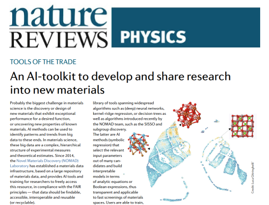

Chemical Society Reviews, (2025)
From text to insight: large language models for chemical data extraction
Mara Schilling-Wilhelmi, Martiño Ríos-García, Sherjeel Shabih, María Victoria Gil, Santiago
Miret, Christoph T. Koch, José A. Márquez and Kevin Maik Jablonka
The vast majority of chemical knowledge exists in unstructured natural language, yet structured
data is crucial for innovative and systematic materials design. The advent of large language
models (LLMs) represents a significant shift, potentially enabling non-experts to extract structured,
actionable data from unstructured text efficiently. While applying LLMs to chemical and materials
science data extraction presents unique challenges, domain knowledge offers opportunities to guide
and validate LLM outputs. This tutorial review provides a comprehensive overview of LLM-based
structured data extraction in chemistry, synthesizing current knowledge and outlining future directions.
We address the lack of standardized guidelines and present frameworks for leveraging the synergy
between LLMs and chemical expertise. Additionally, we created an online Jupyter book,
matextract.pub, full of hands-on examples
of the different steps in the extraction workflow using LLMs.
npj Computational Materials volume 8, (2022)
The NOMAD Artificial-Intelligence Toolkit: turning materials-science data into knowledge
and understanding
Luigi Sbailò, Ádám Fekete, Luca M. Ghiringhelli & Matthias Scheffler
We present the Novel-Materials-Discovery (NOMAD) Artificial-Intelligence (AI) Toolkit, a
web-browser-based infrastructure for the interactive AI-based analysis of materials-science
findable, accessible, interoperable, and reusable (FAIR) data. The AI Toolkit readily operates
on the FAIR data stored in the central server of the NOMAD Archive, the largest database of
materials-science data worldwide, as well as locally stored, users' owned data. The NOMAD
Oasis, a local, stand-alone server can be also used to run the AI Toolkit. By using Jupyter
notebooks that run in a web-browser, the NOMAD data can be queried and accessed; data mining,
machine learning, and other AI techniques can be then applied to analyze them. This infrastructure
brings the concept of reproducibility in materials science to the next level, by allowing
researchers to share not only the data contributing to their scientific publications, but also
all the developed methods and analytics tools. Besides reproducing published results, users
of the NOMAD AI toolkit can modify the Jupyter notebooks toward their own research work.
Nature Reviews Physics volume 3, 724 (2021)
An AI-toolkit to develop and share research into new materials
Luca M. Ghiringhelli

Probably the biggest challenge in materials science is the discovery or design of new materials
that exhibit exceptional performance for a desired function, or uncovering new properties of
known materials. AI methods can be used to identify patterns and trends from big data to these
ends. In materials science, these big data are a complex, hierarchical structure of experimental
measures and theoretical estimates. Since 2014, the Novel Materials Discovery (NOMAD) Laboratory
has established a materials data infrastructure, based on a large repository of materials data,
and provides AI tools and training for researchers to freely access this resource, in compliance
with the FAIR principles — that data should be findable, accessible, interoperable and reusable
(or recyclable).